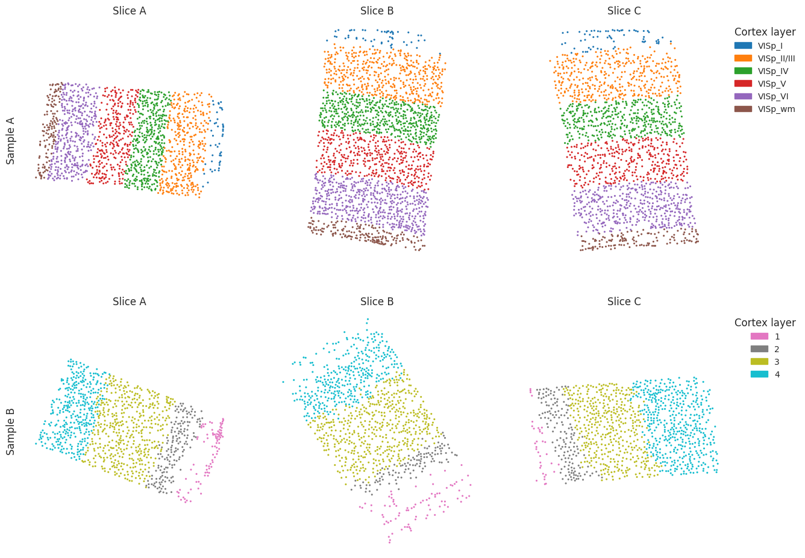
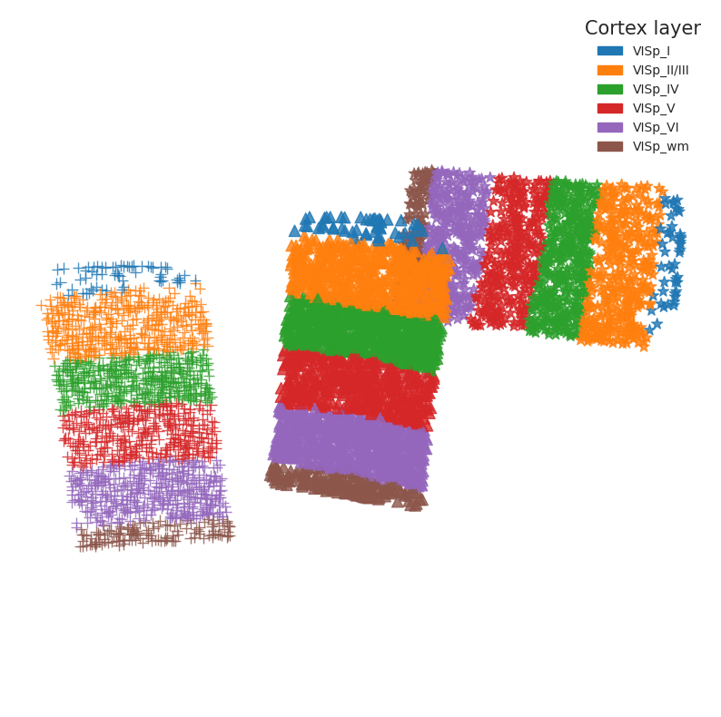
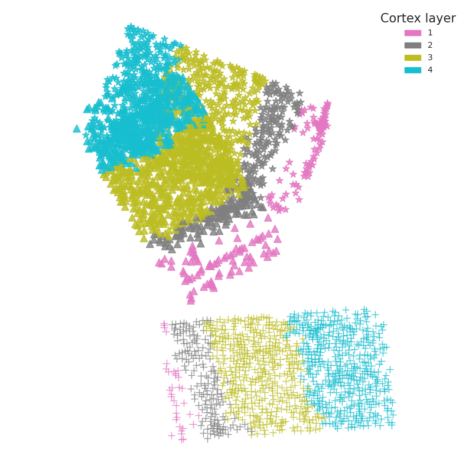
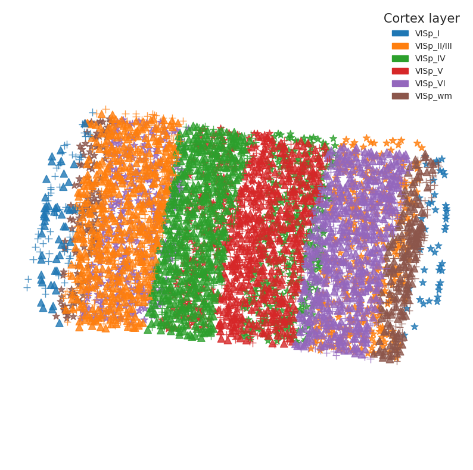
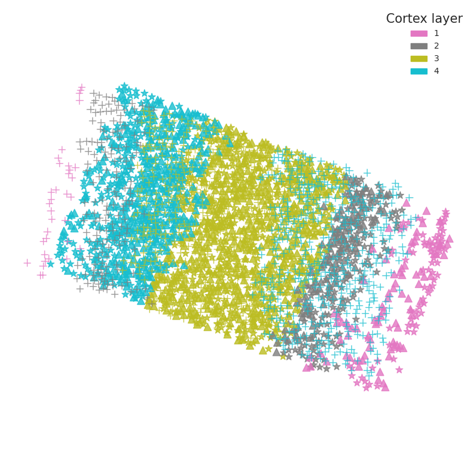

Application with new data
This tutorial demonstrates spatial data alignment on new BaristaSeq mouse data and STARmap mouse data using SODB and Paste.
This tutorial refers to the following tutorial at https://github.com/raphael-group/paste_reproducibility/blob/main/notebooks/DLPFC_pairwise.ipynb. At the same time, the way of loadding data is modified by using SODB.
Import packages and set configurations
[1]:
# Imports various packages for data analysis and visualization.
# math: provides mathematical functions such as logarithms, trigonometric functions, etc.
import math
# pandas: used for data manipulation and analysis.
import pandas as pd
# numpy: used for numerical computing, including mathematical operations on arrays and matrices.
import numpy as np
# scipy: used for scientific computing, including functions for optimization, linear algebra, statistics, and signal processing.
import scipy
# seaborn: used for statistical data visualization, providing high-level interfaces for creating informative and attractive visualizations.
import seaborn as sns
# matplotlib: a comprehensive library for creating static, animated, and interactive visualizations in Python.
import matplotlib
import matplotlib.pyplot as plt
# matplotlib.patches: provides classes for creating graphical objects such as rectangles, circles, and polygons.
import matplotlib.patches as mpatches
# style: a module within matplotlib that allows users to customize the style of plots.
from matplotlib import style
# time: provides time-related functions, such as measuring execution time and converting between time formats.
import time
# scanpy: a Python package for single-cell gene expression analysis, including preprocessing, clustering, and differential expression analysis.
import scanpy as sc
# sklearn: a machine learning library with various tools for classification, regression, clustering, and dimensionality reduction.
import sklearn
# networkx: a Python package for creating, manipulating, and studying complex networks.
import networkx as nx
# ot: a Python package for optimal transport (OT) computations, including OT-based algorithms for data analysis and visualization.
import ot
style.use('seaborn-white')
/tmp/ipykernel_45585/1085477245.py:19: MatplotlibDeprecationWarning: The seaborn styles shipped by Matplotlib are deprecated since 3.6, as they no longer correspond to the styles shipped by seaborn. However, they will remain available as 'seaborn-v0_8-<style>'. Alternatively, directly use the seaborn API instead.
style.use('seaborn-white')
[ ]:
# Import paste package
import paste as pst
Streamline development of loading spatial data with SOBD
[ ]:
# Import pysodb package
# Pysodb is a Python package that provides a set of tools for working with SODB databases.
# SODB is a format used to store data in memory-mapped files for efficient access and querying.
# This package allows users to interact with SODB files using Python.
import pysodb
[2]:
# Initialization
sodb = pysodb.SODB()
[3]:
# Load two kind data
adata_list_baristaseq = sodb.load_dataset('Sun2021Integrating')
adata_starmap = sodb.load_dataset('Dataset11_MS_raw')['Dataset11']
download experiment[Slice_1] in dataset[Sun2021Integrating]
100%|██████████| 4.27M/4.27M [00:02<00:00, 1.98MB/s]
load experiment[Slice_1] in dataset[Sun2021Integrating]
download experiment[Slice_3] in dataset[Sun2021Integrating]
100%|██████████| 4.45M/4.45M [00:02<00:00, 1.97MB/s]
load experiment[Slice_3] in dataset[Sun2021Integrating]
download experiment[Slice_2] in dataset[Sun2021Integrating]
100%|██████████| 5.63M/5.63M [00:02<00:00, 1.99MB/s]
load experiment[Slice_2] in dataset[Sun2021Integrating]
download experiment[Dataset11] in dataset[Dataset11_MS_raw]
100%|██████████| 3.07M/3.07M [00:01<00:00, 1.95MB/s]
load experiment[Dataset11] in dataset[Dataset11_MS_raw]
Preparation
[4]:
# Create s adata_list_starmap dictionary and split adata_starmap into subsets based "slice_id"
adata_list_starmap = {}
for si in adata_starmap.obs['slice_id'].cat.categories:
a = adata_starmap[adata_starmap.obs['slice_id']==si]
a.obs['layer'] = a.obs['gt'].astype('str')
a.obs['layer'] = a.obs['layer'].astype('category')
adata_list_starmap[a.obs['slice_id'][0]] = a
/tmp/ipykernel_45585/2236284691.py:4: ImplicitModificationWarning: Trying to modify attribute `.obs` of view, initializing view as actual.
a.obs['layer'] = a.obs['gt'].astype('str')
/tmp/ipykernel_45585/2236284691.py:4: ImplicitModificationWarning: Trying to modify attribute `.obs` of view, initializing view as actual.
a.obs['layer'] = a.obs['gt'].astype('str')
/tmp/ipykernel_45585/2236284691.py:4: ImplicitModificationWarning: Trying to modify attribute `.obs` of view, initializing view as actual.
a.obs['layer'] = a.obs['gt'].astype('str')
[5]:
# Define a function called rotate_translate to generate a random rotation and translation
import numpy as np
import random
def rotate_translate(matrix):
# Create rotation matrix
theta = random.uniform(0, 2 * np.pi)
rotation_matrix = np.array([[np.cos(theta), -np.sin(theta)],
[np.sin(theta), np.cos(theta)]])
# Calculate translation bounds
max_coords = np.max(matrix, axis=0)
min_coords = np.min(matrix, axis=0)
translation_bounds = 0.5 * (max_coords - min_coords)
# Generate random translation vector within bounds
translation_vector = np.array([random.uniform(-translation_bounds[0], translation_bounds[0]),
random.uniform(-translation_bounds[1], translation_bounds[1])])
# Apply rotation and translation
new_matrix = np.dot(matrix, rotation_matrix) + translation_vector
return new_matrix
[6]:
# Combine adata_list_baristaseq and adata_list_starmap
adata_list = adata_list_baristaseq
adata_list.update(adata_list_starmap)
[7]:
adata_list
[7]:
{'Slice_1': AnnData object with n_obs × n_vars = 3390 × 79
obs: 'Slice', 'x', 'y', 'Dist to pia', 'Dist to bottom', 'Angle', 'unused-1', 'unused-2', 'x_um', 'y_um', 'depth_um', 'layer', 'leiden'
uns: 'leiden', 'leiden_colors', 'log1p', 'moranI', 'neighbors', 'pca', 'spatial_neighbors', 'umap'
obsm: 'X_pca', 'X_umap', 'spatial'
varm: 'PCs'
obsp: 'connectivities', 'distances', 'spatial_connectivities', 'spatial_distances',
'Slice_3': AnnData object with n_obs × n_vars = 3545 × 79
obs: 'Slice', 'x', 'y', 'Dist to pia', 'Dist to bottom', 'Angle', 'unused-1', 'unused-2', 'x_um', 'y_um', 'depth_um', 'layer', 'leiden'
uns: 'leiden', 'leiden_colors', 'log1p', 'moranI', 'neighbors', 'pca', 'spatial_neighbors', 'umap'
obsm: 'X_pca', 'X_umap', 'spatial'
varm: 'PCs'
obsp: 'connectivities', 'distances', 'spatial_connectivities', 'spatial_distances',
'Slice_2': AnnData object with n_obs × n_vars = 4491 × 79
obs: 'Slice', 'x', 'y', 'Dist to pia', 'Dist to bottom', 'Angle', 'unused-1', 'unused-2', 'x_um', 'y_um', 'depth_um', 'layer', 'leiden'
uns: 'leiden', 'leiden_colors', 'log1p', 'moranI', 'neighbors', 'pca', 'spatial_neighbors', 'umap'
obsm: 'X_pca', 'X_umap', 'spatial'
varm: 'PCs'
obsp: 'connectivities', 'distances', 'spatial_connectivities', 'spatial_distances',
'BZ14': AnnData object with n_obs × n_vars = 1088 × 166
obs: 'ct', 'gt', 'slice_id', 'batch', 'layer'
uns: 'moranI', 'spatial_neighbors'
obsm: 'spatial'
obsp: 'spatial_connectivities', 'spatial_distances',
'BZ5': AnnData object with n_obs × n_vars = 1049 × 166
obs: 'ct', 'gt', 'slice_id', 'batch', 'layer'
uns: 'moranI', 'spatial_neighbors'
obsm: 'spatial'
obsp: 'spatial_connectivities', 'spatial_distances',
'BZ9': AnnData object with n_obs × n_vars = 1053 × 166
obs: 'ct', 'gt', 'slice_id', 'batch', 'layer'
uns: 'moranI', 'spatial_neighbors'
obsm: 'spatial'
obsp: 'spatial_connectivities', 'spatial_distances'}
[8]:
# Define a list containing the keys of adata_list
sample_list = ["Slice_1", "Slice_2", "Slice_3",'BZ5','BZ9','BZ14']
[9]:
# Remove either 'VISp' or 'outside_VISp' for each sub-dataset in adata_list
# Apply a transformation to 'spatial' of each sub-dataset via rotate_translate()
adatas = {}
for key in sample_list:
a = adata_list[key]
a = a[np.logical_not((a.obs['layer']=='VISp') | (a.obs['layer']=='outside_VISp'))]
new_spatial = rotate_translate(a.obsm['spatial'])
a.obsm['spatial'] = new_spatial
adatas[key] = a
[10]:
# Define two lists, sample_groups and layer_groups, that organize data into different groups based on sample slices and brain regions
# Map specific brain regions to colors using a dictionary
# The seaborn color palette is used to assign colors to each brain region
sample_groups = [["Slice_1", "Slice_2", "Slice_3"],['BZ5','BZ9','BZ14',]]
layer_groups = [[adatas[sample_groups[j][i]] for i in range(len(sample_groups[j]))] for j in range(len(sample_groups))]
cmp = sns.color_palette()
layer_to_color_map = {
'VISp_I':cmp[0],
'VISp_II/III':cmp[1],
'VISp_IV':cmp[2],
'VISp_V':cmp[3],
'VISp_VI':cmp[4],
'VISp_wm':cmp[5],
'1':cmp[6],
'2':cmp[7],
'3':cmp[8],
'4':cmp[9],
}
[11]:
# Visualize the different slices mapped by layer_groups
slice_map = {0:'A',1:'B',2:'C'}
fig, axs = plt.subplots(2, 3,figsize=(15,11.5))
for j in range(len(layer_groups)):
axs[j,0].text(-0.1, 0.5, 'Sample '+slice_map[j],fontsize=12,rotation='vertical',transform = axs[j,0].transAxes,verticalalignment='center')
for i in range(len(layer_groups[j])):
adata = adatas[sample_list[j*3+i]]
colors = list(adata.obs['layer'].astype('str').map(layer_to_color_map))
colors = [(r, g, b) for r, g, b in colors]
axs[j,i].scatter(layer_groups[j][i].obsm['spatial'][:,0],layer_groups[j][i].obsm['spatial'][:,1],linewidth=0,s=20, marker=".",
color=colors
)
axs[j,i].set_title('Slice '+ slice_map[i],size=12)
axs[j,i].invert_yaxis()
axs[j,i].axis('off')
axs[j,i].axis('equal')
# if i<3:
# s = ''
# delta = 0.05 if i==1 else 0
# axs[j,i].annotate('',xy=(1-delta, 0.5), xytext=(1.2+delta, 0.5),xycoords=axs[j,i].transAxes,textcoords=axs[j,i].transAxes,arrowprops=dict(arrowstyle='<->',lw=1))
# axs[j,0].text(1.1, 0.55, s,fontsize=9,transform = axs[j,i].transAxes,horizontalalignment='center')
axs[j,2].legend(handles=[mpatches.Patch(color=layer_to_color_map[adata.obs['layer'].cat.categories[i]], label=adata.obs['layer'].cat.categories[i]) for i in range(len(adata.obs['layer'].cat.categories))],fontsize=10,title='Cortex layer',title_fontsize=12,bbox_to_anchor=(1, 1))

Running PASTE for alignment
[12]:
# Use a spatial heuristic and pairwise alignment to estimate a mapping between the datasets, which is then used to calculate a mapping accuracy
alpha = 0.1
pis = [[None for i in range(len(layer_groups[j])-1)] for j in range(len(layer_groups))]
for j in range(len(layer_groups)):
for i in range(len(layer_groups[j])-1):
pi0 = pst.match_spots_using_spatial_heuristic(layer_groups[j][i].obsm['spatial'],layer_groups[j][i+1].obsm['spatial'],use_ot=True)
start = time.time()
pis[j][i] = pst.pairwise_align(layer_groups[j][i], layer_groups[j][i+1],alpha=alpha,G_init=pi0,norm=True,verbose=False)
tt = time.time()-start
print(j,i,'time',tt)
Using selected backend cpu. If you want to use gpu, set use_gpu = True.
0 0 time 30.695186853408813
Using selected backend cpu. If you want to use gpu, set use_gpu = True.
0 1 time 13.383000373840332
Using selected backend cpu. If you want to use gpu, set use_gpu = True.
1 0 time 3.991774797439575
Using selected backend cpu. If you want to use gpu, set use_gpu = True.
1 1 time 5.861394166946411
[13]:
# Align spatial coordinates of sequential pairwise slices
paste_layer_groups = [pst.stack_slices_pairwise(layer_groups[j], pis[j]) for j in range(len(layer_groups)) ]
[14]:
paste_layer_groups
[14]:
[[AnnData object with n_obs × n_vars = 1525 × 79
obs: 'Slice', 'x', 'y', 'Dist to pia', 'Dist to bottom', 'Angle', 'unused-1', 'unused-2', 'x_um', 'y_um', 'depth_um', 'layer', 'leiden'
uns: 'leiden', 'leiden_colors', 'log1p', 'moranI', 'neighbors', 'pca', 'spatial_neighbors', 'umap'
obsm: 'X_pca', 'X_umap', 'spatial'
varm: 'PCs'
obsp: 'connectivities', 'distances', 'spatial_connectivities', 'spatial_distances',
AnnData object with n_obs × n_vars = 2042 × 79
obs: 'Slice', 'x', 'y', 'Dist to pia', 'Dist to bottom', 'Angle', 'unused-1', 'unused-2', 'x_um', 'y_um', 'depth_um', 'layer', 'leiden'
uns: 'leiden', 'leiden_colors', 'log1p', 'moranI', 'neighbors', 'pca', 'spatial_neighbors', 'umap'
obsm: 'X_pca', 'X_umap', 'spatial'
varm: 'PCs'
obsp: 'connectivities', 'distances', 'spatial_connectivities', 'spatial_distances',
AnnData object with n_obs × n_vars = 1690 × 79
obs: 'Slice', 'x', 'y', 'Dist to pia', 'Dist to bottom', 'Angle', 'unused-1', 'unused-2', 'x_um', 'y_um', 'depth_um', 'layer', 'leiden'
uns: 'leiden', 'leiden_colors', 'log1p', 'moranI', 'neighbors', 'pca', 'spatial_neighbors', 'umap'
obsm: 'X_pca', 'X_umap', 'spatial'
varm: 'PCs'
obsp: 'connectivities', 'distances', 'spatial_connectivities', 'spatial_distances'],
[AnnData object with n_obs × n_vars = 1049 × 166
obs: 'ct', 'gt', 'slice_id', 'batch', 'layer'
uns: 'moranI', 'spatial_neighbors'
obsm: 'spatial'
obsp: 'spatial_connectivities', 'spatial_distances',
AnnData object with n_obs × n_vars = 1053 × 166
obs: 'ct', 'gt', 'slice_id', 'batch', 'layer'
uns: 'moranI', 'spatial_neighbors'
obsm: 'spatial'
obsp: 'spatial_connectivities', 'spatial_distances',
AnnData object with n_obs × n_vars = 1088 × 166
obs: 'ct', 'gt', 'slice_id', 'batch', 'layer'
uns: 'moranI', 'spatial_neighbors'
obsm: 'spatial'
obsp: 'spatial_connectivities', 'spatial_distances']]
[15]:
# Define a function to plots spatial coordinates of cells in different groups
def plot_slices_overlap(groups, adatas, sample_list, layer_to_color_map,save=None):
marker_list = ['*','^','+']
for j in range(len(groups)):
plt.figure(figsize=(10,10))
for i in range(len(groups[j])):
adata = adatas[sample_list[j*3+i]]
colors = list(adata.obs['layer'].astype('str').map(layer_to_color_map))
plt.scatter(groups[j][i].obsm['spatial'][:,0],groups[j][i].obsm['spatial'][:,1],linewidth=1,s=80, marker=marker_list[i],color=colors,alpha=0.8)
plt.legend(handles=[mpatches.Patch(color=layer_to_color_map[adata.obs['layer'].cat.categories[i]], label=adata.obs['layer'].cat.categories[i]) for i in range(len(adata.obs['layer'].cat.categories))],fontsize=10,title='Cortex layer',title_fontsize=15,bbox_to_anchor=(1, 1))
plt.gca().invert_yaxis()
plt.axis('off')
plt.axis('equal')
if save is None:
plt.show()
else:
plt.savefig(f'{save}_{j}.pdf',bbox_inches='tight',transparent=True)
[16]:
# Plot Stacking of slices without alignment
plot_slices_overlap(layer_groups, adatas, sample_list, layer_to_color_map,save='figures/new_before')


[17]:
# Plot Stacking of slices with PASTE alignment
plot_slices_overlap(paste_layer_groups, adatas, sample_list, layer_to_color_map,save='figures/new_after')


[ ]:
[18]:
# Add a third spatial dimension to the spatial data by stacking an array of j*100 values for each group of the list 'layer_groups'
dataset_name = 'new'
for i in range(len(layer_groups)):
rsta_list = []
for j in range(len(layer_groups[i])):
a= layer_groups[i][j]
spatial = a.obsm['spatial']
spatial_z = np.ones(shape=(spatial.shape[0],1))*j*100
spatial_3d = np.hstack([spatial,spatial_z])
a.obsm['spatial_3d'] = spatial_3d
rsta_list.append(a)
a_concat = rsta_list[0].concatenate(rsta_list[1:])
a_concat.write_h5ad(f'{dataset_name}_sample{i}_3d.h5ad')
/home/linsenlin/anaconda3/envs/alignment/lib/python3.8/site-packages/anndata/_core/anndata.py:1785: FutureWarning: X.dtype being converted to np.float32 from float64. In the next version of anndata (0.9) conversion will not be automatic. Pass dtype explicitly to avoid this warning. Pass `AnnData(X, dtype=X.dtype, ...)` to get the future behavour.
[AnnData(sparse.csr_matrix(a.shape), obs=a.obs) for a in all_adatas],
/home/linsenlin/anaconda3/envs/alignment/lib/python3.8/site-packages/anndata/_core/anndata.py:1785: FutureWarning: X.dtype being converted to np.float32 from float64. In the next version of anndata (0.9) conversion will not be automatic. Pass dtype explicitly to avoid this warning. Pass `AnnData(X, dtype=X.dtype, ...)` to get the future behavour.
[AnnData(sparse.csr_matrix(a.shape), obs=a.obs) for a in all_adatas],
/home/linsenlin/anaconda3/envs/alignment/lib/python3.8/site-packages/anndata/_core/anndata.py:1785: FutureWarning: X.dtype being converted to np.float32 from float64. In the next version of anndata (0.9) conversion will not be automatic. Pass dtype explicitly to avoid this warning. Pass `AnnData(X, dtype=X.dtype, ...)` to get the future behavour.
[AnnData(sparse.csr_matrix(a.shape), obs=a.obs) for a in all_adatas],
/home/linsenlin/anaconda3/envs/alignment/lib/python3.8/site-packages/anndata/_core/anndata.py:1785: FutureWarning: X.dtype being converted to np.float32 from float64. In the next version of anndata (0.9) conversion will not be automatic. Pass dtype explicitly to avoid this warning. Pass `AnnData(X, dtype=X.dtype, ...)` to get the future behavour.
[AnnData(sparse.csr_matrix(a.shape), obs=a.obs) for a in all_adatas],
/home/linsenlin/anaconda3/envs/alignment/lib/python3.8/site-packages/anndata/_core/anndata.py:1785: FutureWarning: X.dtype being converted to np.float32 from float64. In the next version of anndata (0.9) conversion will not be automatic. Pass dtype explicitly to avoid this warning. Pass `AnnData(X, dtype=X.dtype, ...)` to get the future behavour.
[AnnData(sparse.csr_matrix(a.shape), obs=a.obs) for a in all_adatas],
/home/linsenlin/anaconda3/envs/alignment/lib/python3.8/site-packages/anndata/_core/anndata.py:1785: FutureWarning: X.dtype being converted to np.float32 from float64. In the next version of anndata (0.9) conversion will not be automatic. Pass dtype explicitly to avoid this warning. Pass `AnnData(X, dtype=X.dtype, ...)` to get the future behavour.
[AnnData(sparse.csr_matrix(a.shape), obs=a.obs) for a in all_adatas],
[19]:
# Add a third spatial dimension to the spatial data by stacking an array of j*100 values for each group of the list 'paste_layer_groups'
dataset_name = 'new'
for i in range(len(paste_layer_groups)):
rsta_list = []
for j in range(len(paste_layer_groups[i])):
a= paste_layer_groups[i][j]
spatial = a.obsm['spatial']
spatial_z = np.ones(shape=(spatial.shape[0],1))*j*100
spatial_3d = np.hstack([spatial,spatial_z])
a.obsm['spatial_3d'] = spatial_3d
rsta_list.append(a)
a_concat = rsta_list[0].concatenate(rsta_list[1:])
a_concat.write_h5ad(f'{dataset_name}_sample{i}_3d.h5ad')
/home/linsenlin/anaconda3/envs/alignment/lib/python3.8/site-packages/anndata/_core/anndata.py:1785: FutureWarning: X.dtype being converted to np.float32 from float64. In the next version of anndata (0.9) conversion will not be automatic. Pass dtype explicitly to avoid this warning. Pass `AnnData(X, dtype=X.dtype, ...)` to get the future behavour.
[AnnData(sparse.csr_matrix(a.shape), obs=a.obs) for a in all_adatas],
/home/linsenlin/anaconda3/envs/alignment/lib/python3.8/site-packages/anndata/_core/anndata.py:1785: FutureWarning: X.dtype being converted to np.float32 from float64. In the next version of anndata (0.9) conversion will not be automatic. Pass dtype explicitly to avoid this warning. Pass `AnnData(X, dtype=X.dtype, ...)` to get the future behavour.
[AnnData(sparse.csr_matrix(a.shape), obs=a.obs) for a in all_adatas],
/home/linsenlin/anaconda3/envs/alignment/lib/python3.8/site-packages/anndata/_core/anndata.py:1785: FutureWarning: X.dtype being converted to np.float32 from float64. In the next version of anndata (0.9) conversion will not be automatic. Pass dtype explicitly to avoid this warning. Pass `AnnData(X, dtype=X.dtype, ...)` to get the future behavour.
[AnnData(sparse.csr_matrix(a.shape), obs=a.obs) for a in all_adatas],
/home/linsenlin/anaconda3/envs/alignment/lib/python3.8/site-packages/anndata/_core/anndata.py:1785: FutureWarning: X.dtype being converted to np.float32 from float64. In the next version of anndata (0.9) conversion will not be automatic. Pass dtype explicitly to avoid this warning. Pass `AnnData(X, dtype=X.dtype, ...)` to get the future behavour.
[AnnData(sparse.csr_matrix(a.shape), obs=a.obs) for a in all_adatas],
/home/linsenlin/anaconda3/envs/alignment/lib/python3.8/site-packages/anndata/_core/anndata.py:1785: FutureWarning: X.dtype being converted to np.float32 from float64. In the next version of anndata (0.9) conversion will not be automatic. Pass dtype explicitly to avoid this warning. Pass `AnnData(X, dtype=X.dtype, ...)` to get the future behavour.
[AnnData(sparse.csr_matrix(a.shape), obs=a.obs) for a in all_adatas],
/home/linsenlin/anaconda3/envs/alignment/lib/python3.8/site-packages/anndata/_core/anndata.py:1785: FutureWarning: X.dtype being converted to np.float32 from float64. In the next version of anndata (0.9) conversion will not be automatic. Pass dtype explicitly to avoid this warning. Pass `AnnData(X, dtype=X.dtype, ...)` to get the future behavour.
[AnnData(sparse.csr_matrix(a.shape), obs=a.obs) for a in all_adatas],